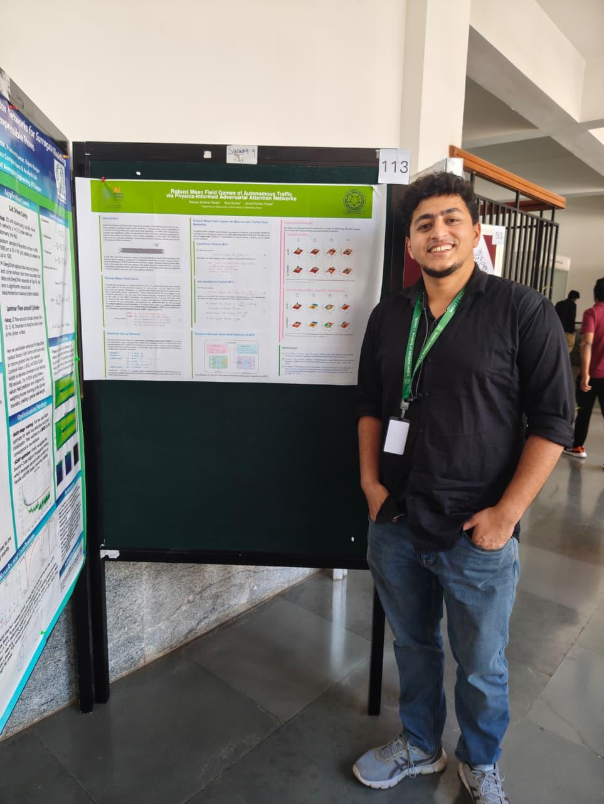
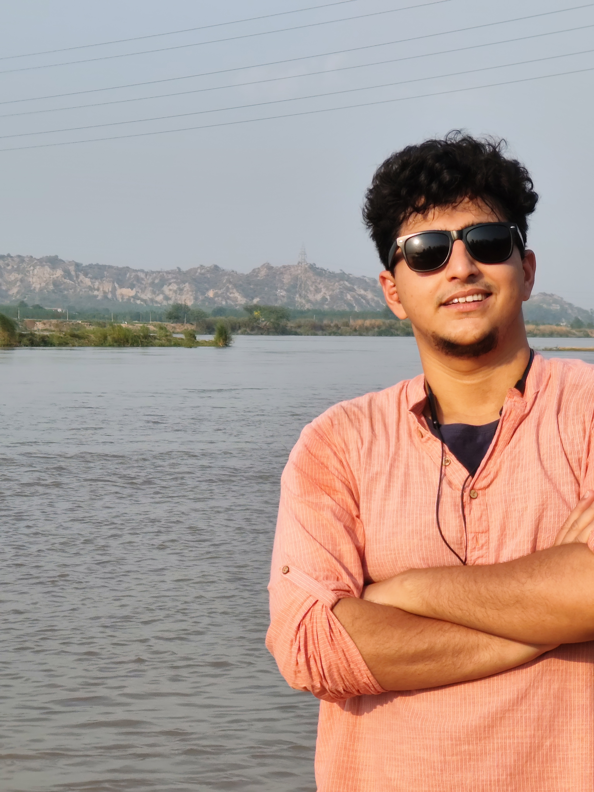
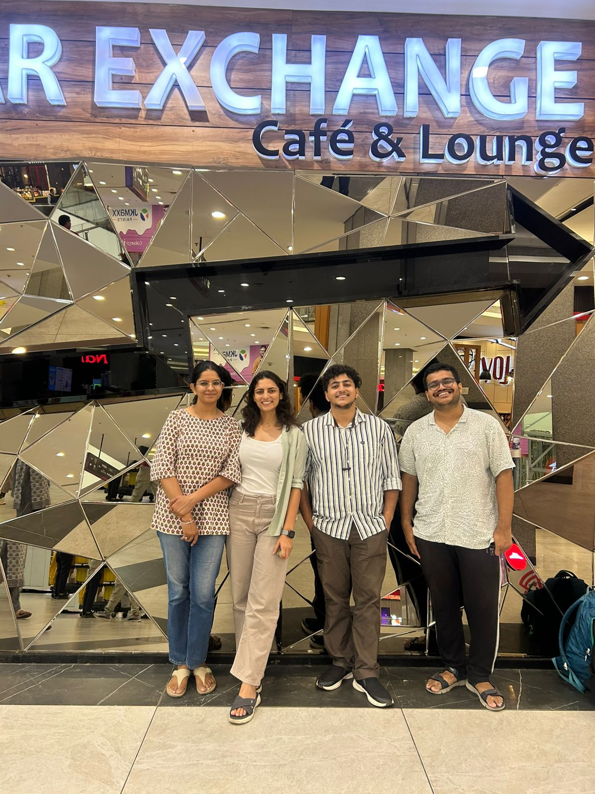
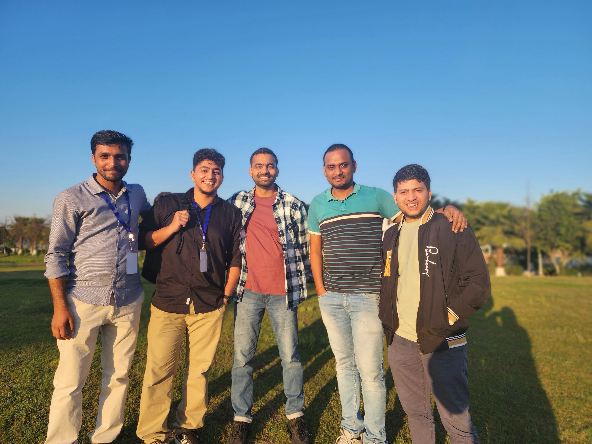
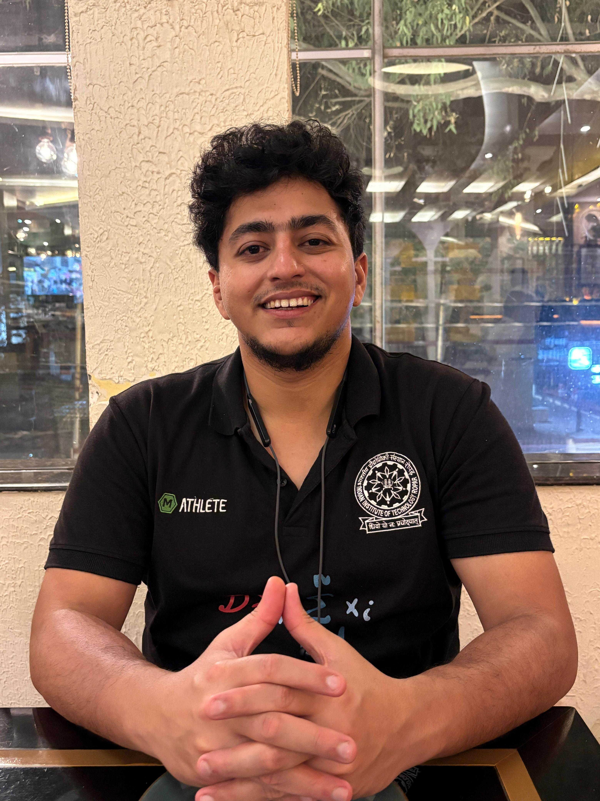

Gallery










Naman Krishna Pande
Ph.D. Mathematics | Indian Institute of Technology Ropar
Exploring the intersections of physics, mathematics and machine learning.
Research Interests:
Mathematical modelling, traffic flow modelling, financial mathematics,
mean-field games, scientific machine learning, numerical modelling.
Hello, I am Naman, currently pursuing my Ph.D. in Mathematics at the department of mathematics, Indian Institute of Technology Ropar under the joint supervision of Prof. A.K. Gupta and Dr. Arun Kumar. I am pursuing my research in modelling of processes such as stock market, traffic flow and cellular transport via machine learning techniques. I am keenly interested in developing deep learning techniques integrated with physical laws, aiming for interpretable, efficient, and impactful solutions.
Apart from academics, I enjoy long walks and/or long tea breaks, while discussing on politics, religion and technology. I enjoy playing badminton, trekking and watching mixed martial arts. I currently am on a fitness journey and hope to continue working on it.




Naman Krishna Pande
Department of Mathematics, Har Gobind Khorana Building
Indian Institute of Technology Ropar, Punjab, India - 140001
Mail to: Naman Krishna Pande